lasaña (plato formado por capas de pasta). Lo que nos confirma que efectivamente la palabra pasticho la utilizamos sólo en Venezuela para referirnos a la preparación que ya todos conocemos y la cual es objeto de este artículo.
El pasticho es un plato ítalo-venezolano que se originó en la región de Emilia-Romaña, Italia. La palabra pasticho proviene del latín pastīcium, que significa "pastel
El pasticho es similar a la lasaña italiana, pero con variaciones que dependen de cada región y familia. En Venezuela, el pasticho es un plato tradicional que se prepara con pasta al huevo, salsa de carne molida, salsa de tomate, bechamel y queso parmesano.
INGREDIENTES
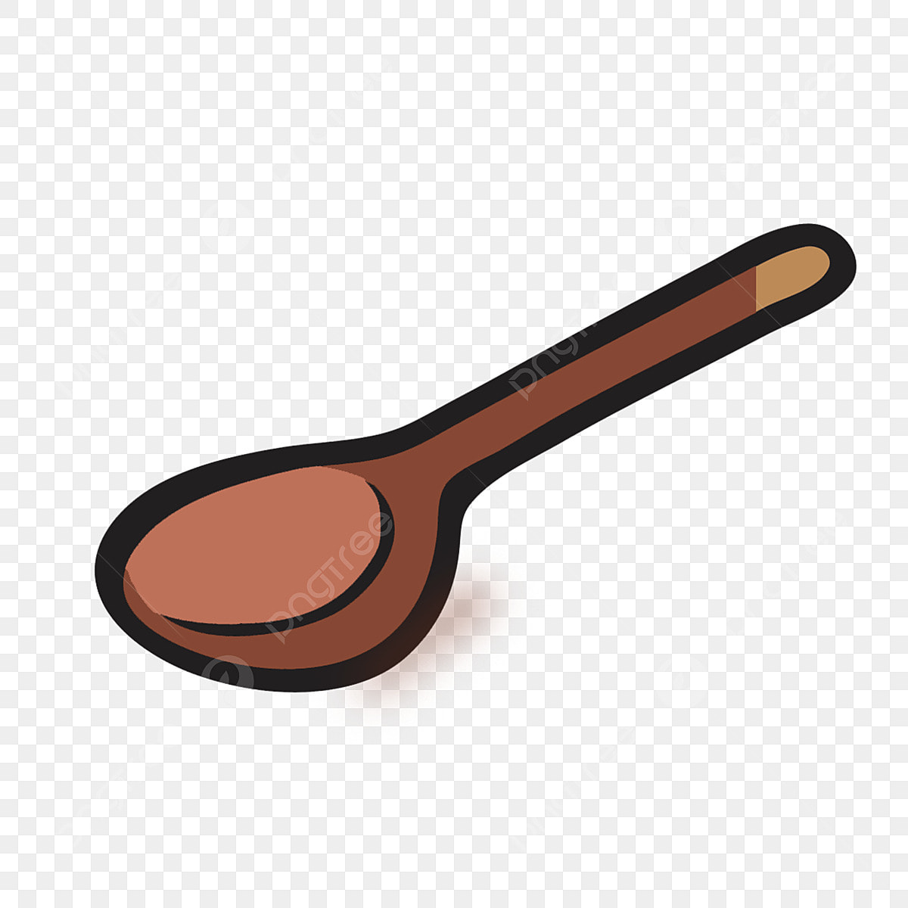
1 cucharada de aceite
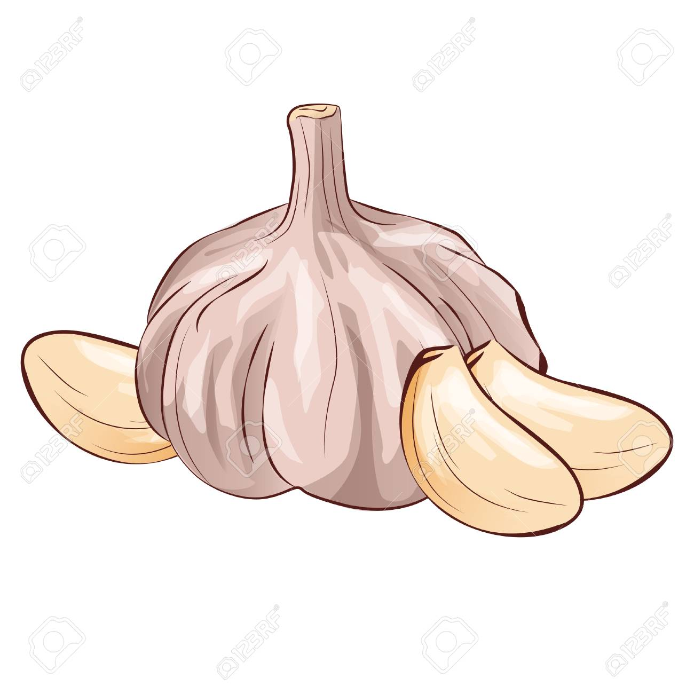
1 diente de ajo pelado y finamente picado
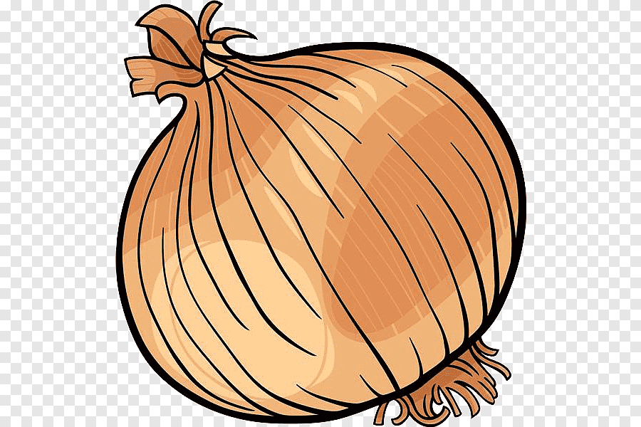
1 cebolla blanca finamente picada
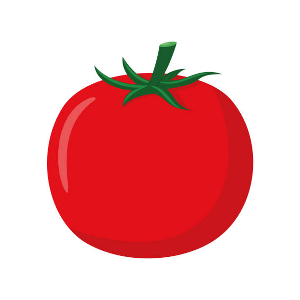
4 tomates rojos medianos finamente picados
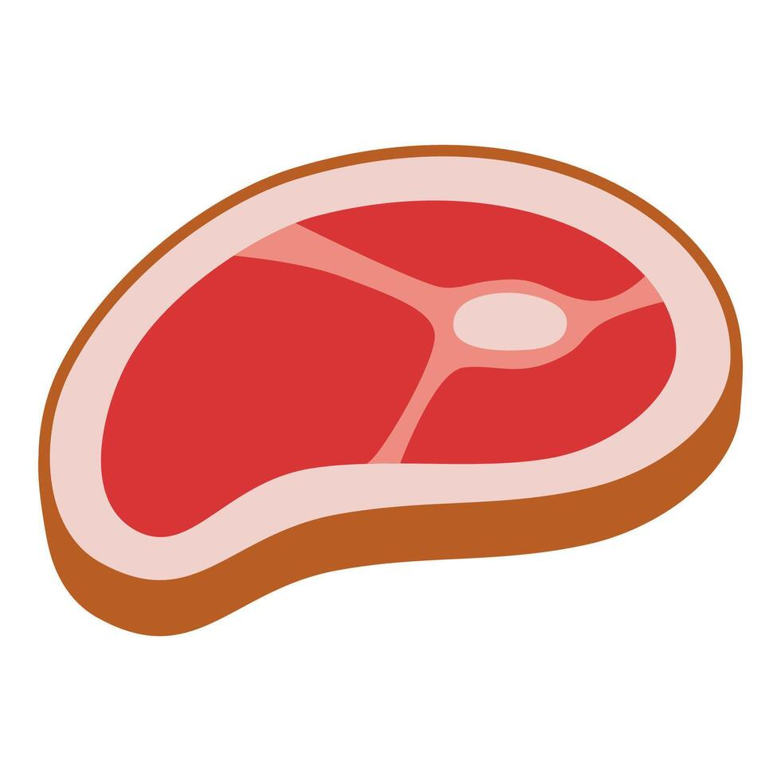
500 gramos de carne molida
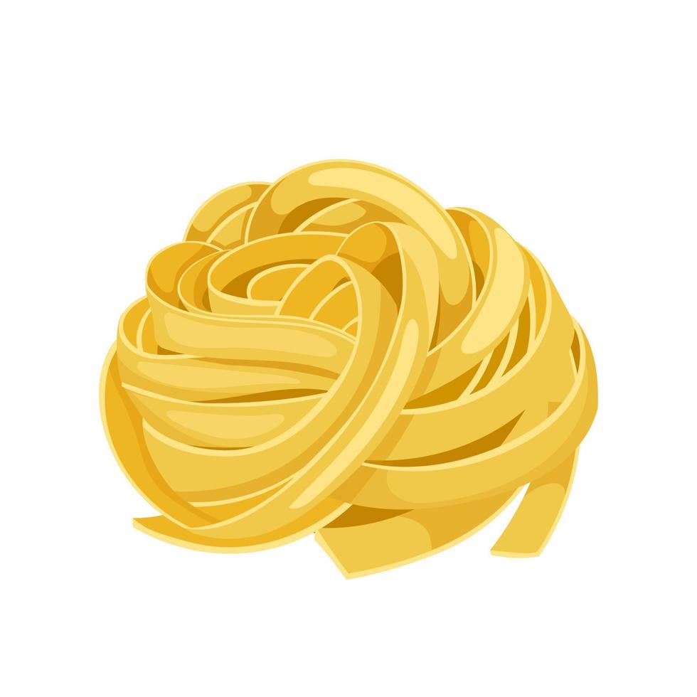
250 gramos de pasta para pasticho precocida
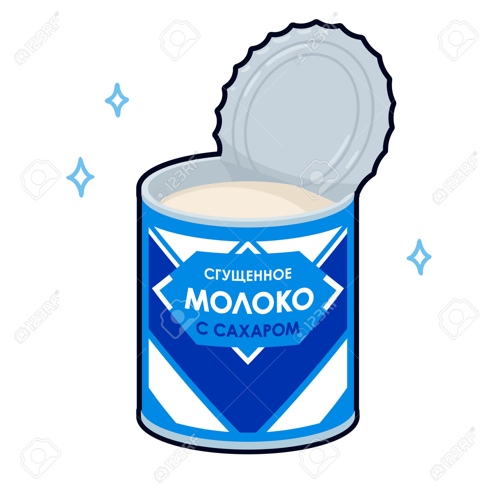
1 lata de Leche Evaporada
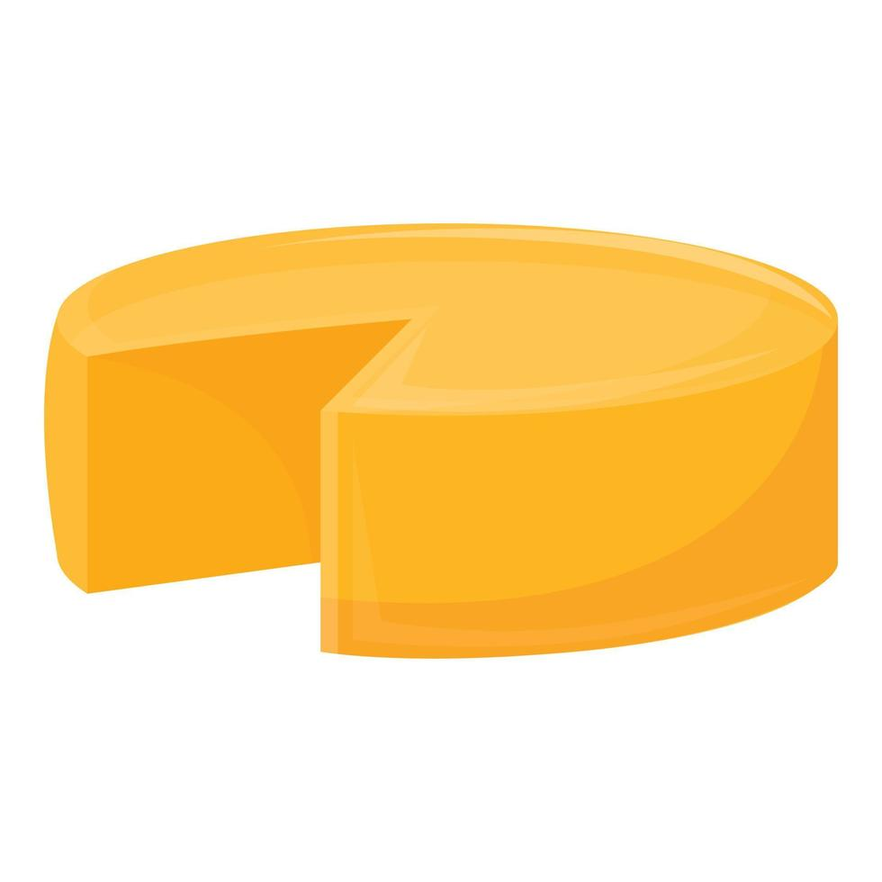
300gr de queso parmesano
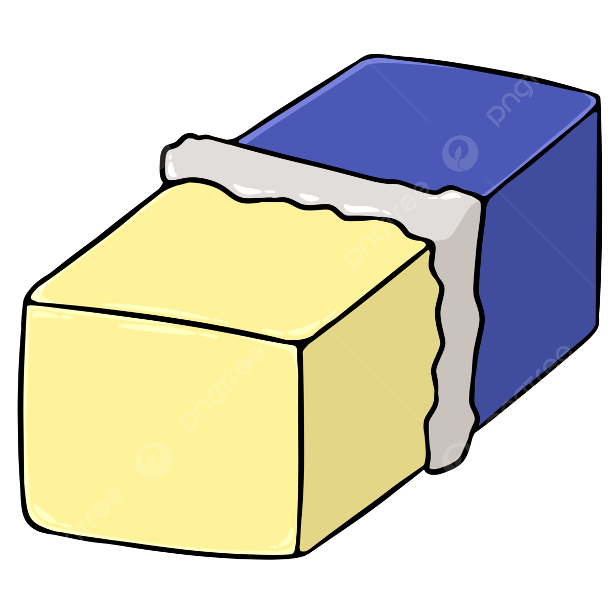
45 gramos de margarina
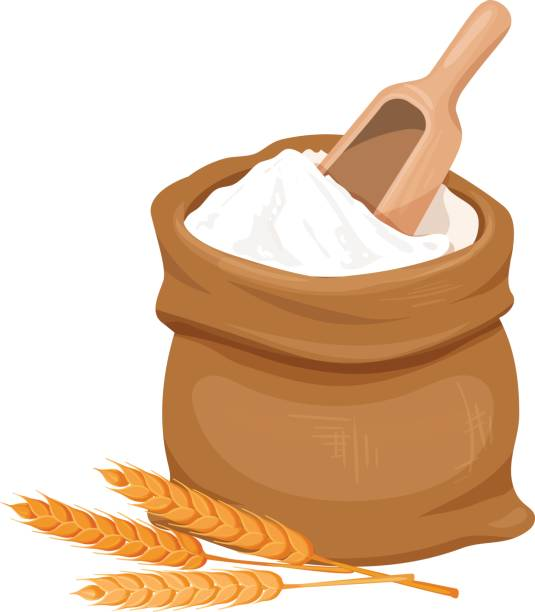
30 gramos de harina de trigo
1/4 cucharadita de nuez moscada
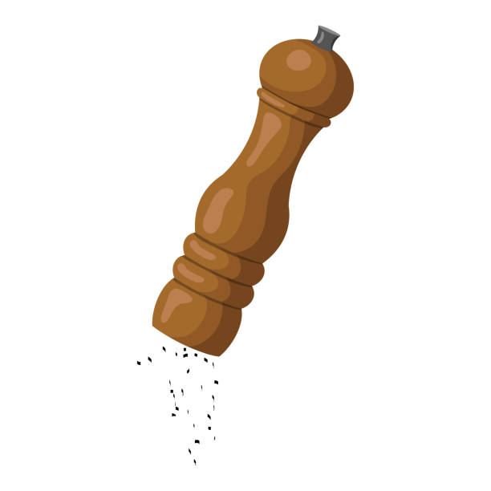
pimienta al gusto
8 lonjas de queso mozzarella
PASOS ¡A COCINAR!
Precalienta el horno a 180°C o 360°F 30 minutos antes de la preparación.
Calienta una sartén a fuego medio, agregando el aceite de oliva, y haciendo un sofrito con la cebolla, la zanahoria y el apio. Luego añade el cubito de costilla MAGGI® desmenuzado y cocina hasta que las verduras ablanden.
Añade la carne, coloca el fuego medio alto, y cocina hasta que la carne cambie de color. Luego, añade los tomates, y al hervir, cambia el fuego a bajo, y tapa la salsa dejando un huevo para que salga vapor. Dejar hervir por 10 minutos.
Mientras, pasa la pasta para pasticho por 1 taza de agua tibia con el fin de que no se parta en el momento de armarla
Prepara la salsa Bechamel colocando la Leche Evaporada CARNATION® en una olla pequeña. Añade el queso parmesano, la harina, junto a la margarina y nuez moscada. Llévalo al fuego, removiendo constantemente hasta que tome la consistencia deseada. Agrega sal y pimienta al gusto. Luego, retírala y resérvala.
En el molde harinado, coloca una capa de pasta, luego una de salsa de carne, una de salsa Bechamel y una de queso mozzarella. Repite esta secuencia hasta terminar con todos ingredientes. Eso sí, asegúrate que la última capa sea de pasta, salsa Bechamel.
Por último, espolvorea queso parmesano por encima. Lleva el molde al horno para hornearlo por 10 a 15 minutos, o hasta que gratine. Retira con cuidado y deja reposar 5 min para servirlo. ¡Disfruta tu pasticho!